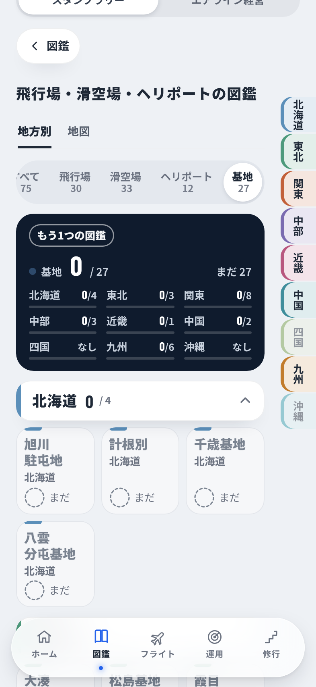
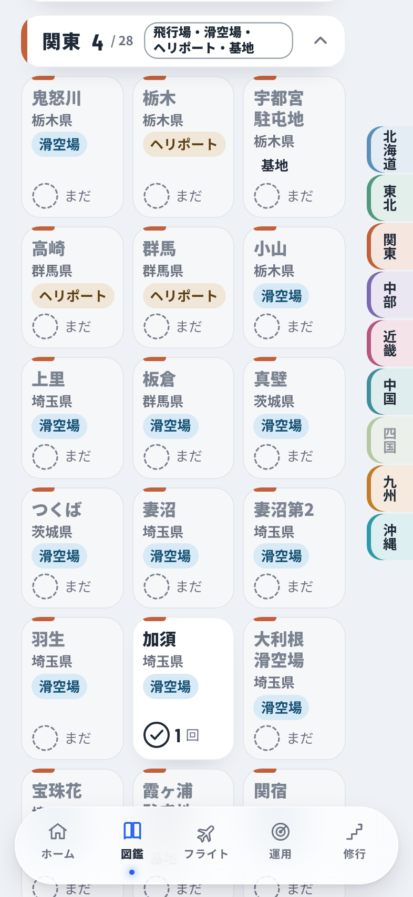

ブランチ design/zukan-filter・画面案だけ（アプリには入れない）。11/20 本人「飛行場、滑空場、ヘリポートのフィルター機能、すべてに何県か表示して」。
決めた形

F4 案A：「基地」のピルを足すピルが5つになり横に送る形。「すべて」は今の75のまま（基地は数に入れない）低い画面（667）：png/F4-base-pill-667.png
F5 案B：基地は「すべて」の中だけ「すべて」が102になり、地方の中に基地の枠が混ざる。図鑑の題と数が変わる低い画面（667）：png/F5-base-mix-667.pngmain の web/ を http.server 8765 で開く → make/capture_now.py → make/build.py（デモに入り inject.js で #bookAir を描き直して HTML に書き出す）→ make/shoot.py <このフォルダ> → make/make_pages.py